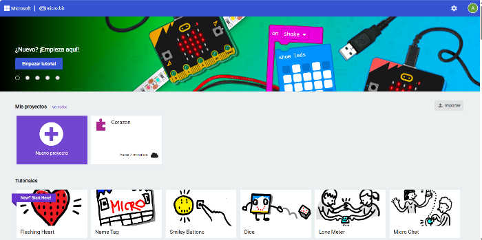

Para iniciarse en la programación de la BBC micro:bit, el editor MakeCode de Microsoft es una gran opción. Con él se pueden usar bloques de diferentes colores que facilitan el trabajo y permiten acceder a todas las capacidades de la placa. Además, se puede ver el código en JavaScript que corresponde a los bloques si se cambia el editor.
A lo largo de esta Situación de Aprendizaje te voy a enseñar los principales bloques para programar microbit con Makecode Microbit.
